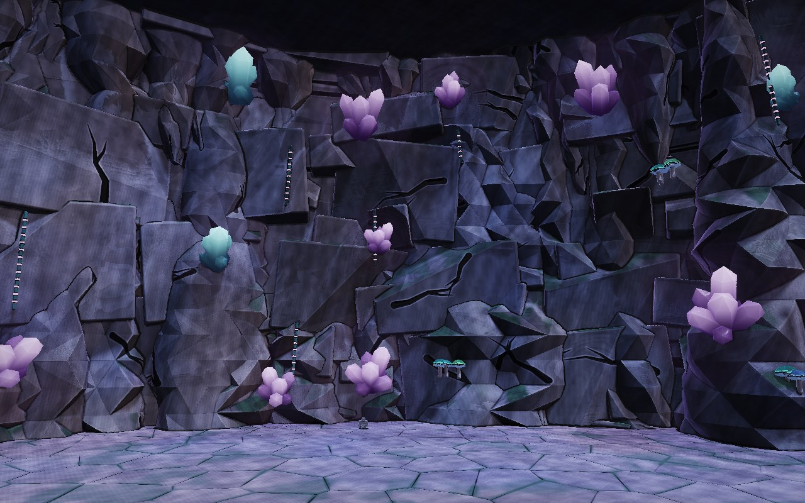
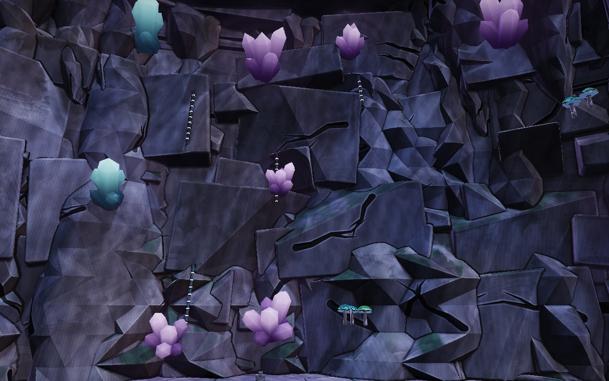
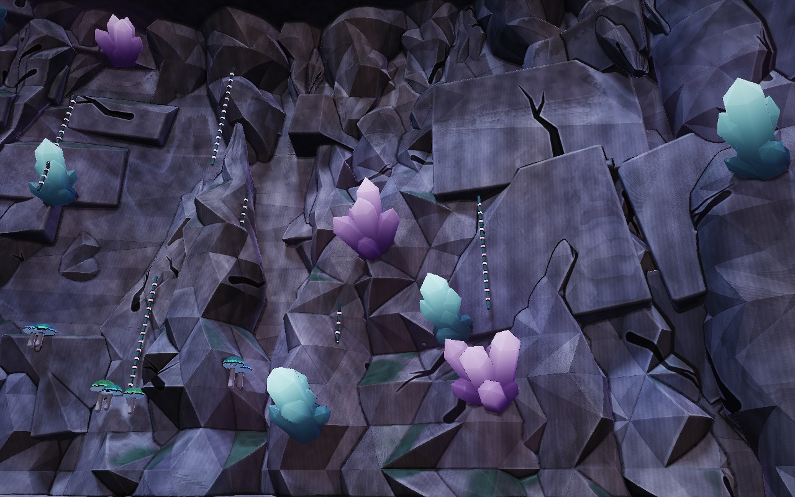
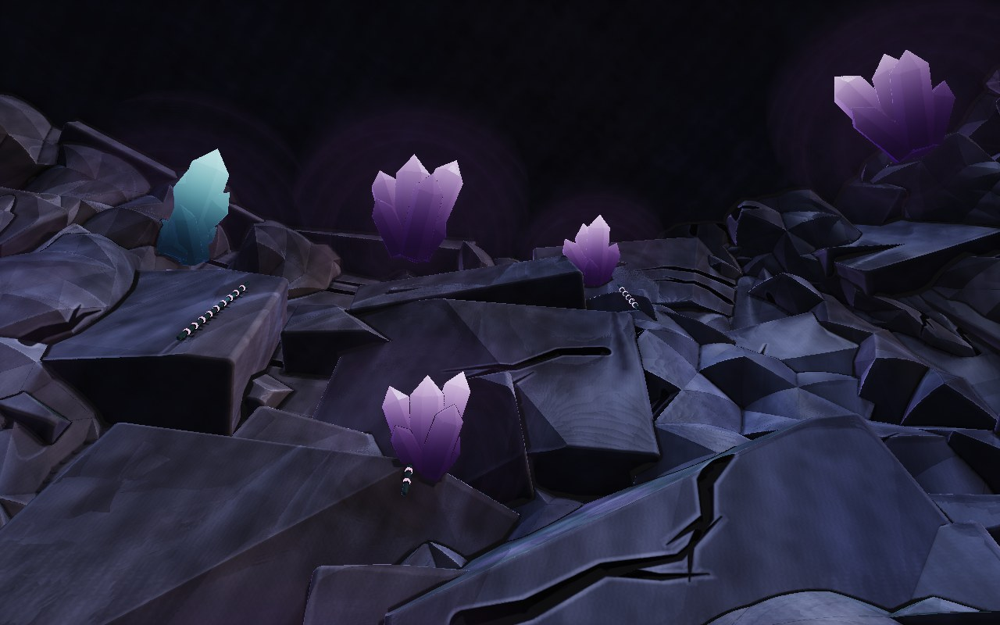
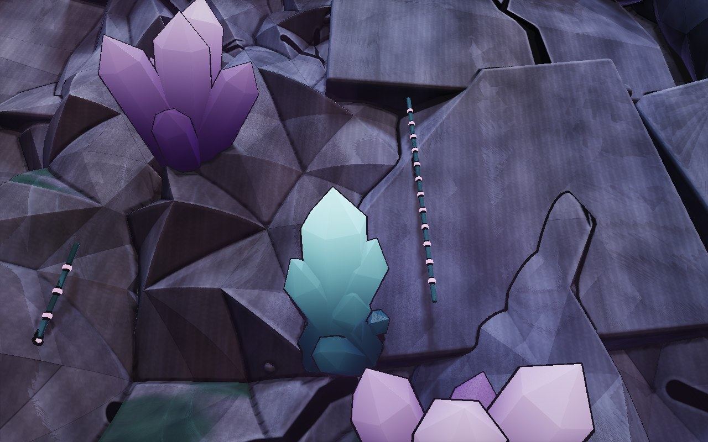
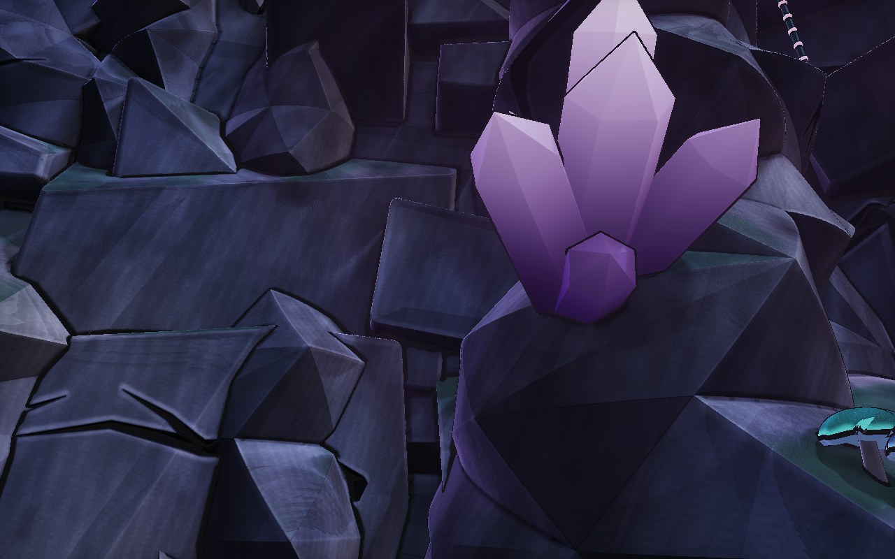

<title>Cavern Wall</title>
<meta name="claude:viewport-fit-sides" content="cover">
<link rel="stylesheet" href="https://fonts.googleapis.com/css2?family=Baloo+2:wght@600;800&family=Atkinson+Hyperlegible:wght@400;700&display=swap">
<style>
/* Layout: six fixed views of the mixed wall, then what's in it and what's next. Matches the canopy hole's page. */
:root {
  --bg: #0c1016; --card: #141a22; --line: #26313d; --fg: #e8eef2; --muted: #9aa8b4; --accent: #c49bff;
  --display: "Baloo 2", "Trebuchet MS", sans-serif; --body: "Atkinson Hyperlegible", system-ui, sans-serif;
  color-scheme: dark;
}
body { background: var(--bg); color: var(--fg); font-family: var(--body); font-size: 15px; line-height: 1.5; }
main { max-width: 1280px; margin: 0 auto; padding-block: 28px 44px; padding-left: max(16px, env(safe-area-inset-left, 0px)); padding-right: max(16px, env(safe-area-inset-right, 0px)); display: flex; flex-direction: column; gap: 24px; }
.eyebrow { font-size: 12px; letter-spacing: 0.1em; text-transform: uppercase; color: var(--muted); margin: 0; }
h1 { font-family: var(--display); font-weight: 800; font-size: 36px; line-height: 1.05; margin: 2px 0 6px; text-wrap: balance; }
h2 { font-family: var(--display); font-weight: 600; font-size: 20px; margin: 0 0 8px; }
.lede { margin: 0; color: var(--muted); max-width: 74ch; }
.hero { position: relative; border: 1px solid var(--line); border-radius: 12px; overflow: hidden; background: #05070a; aspect-ratio: 8 / 5; max-width: 100%; }
.hero canvas { width: 100%; height: 100%; display: block; }
.hero .tag { position: absolute; left: 12px; bottom: 10px; font-size: 12px; color: var(--fg); background: rgba(5,7,10,0.65); padding: 3px 10px; border-radius: 999px; }
.hero button { position: absolute; right: 12px; bottom: 10px; font: inherit; font-size: 12px; color: var(--fg); background: rgba(5,7,10,0.65); border: 1px solid var(--line); padding: 3px 12px; border-radius: 999px; cursor: pointer; }
.hero button:focus-visible { outline: 2px solid var(--accent); outline-offset: 2px; }
.grid { display: grid; grid-template-columns: repeat(2, minmax(0, 1fr)); gap: 14px; }
@media (max-width: 760px) { .grid { grid-template-columns: 1fr; } }
figure { margin: 0; background: var(--card); border: 1px solid var(--line); border-radius: 12px; overflow: hidden; min-width: 0; }
figure img { display: block; width: 100%; height: auto; aspect-ratio: 8 / 5; object-fit: cover; }
figcaption { padding: 10px 14px 12px; font-size: 14px; color: var(--muted); }
figcaption b { color: var(--fg); font-weight: 700; }
.cols { display: grid; grid-template-columns: repeat(2, minmax(0, 1fr)); gap: 20px; }
@media (max-width: 760px) { .cols { grid-template-columns: 1fr; } }
ul { margin: 0; padding-left: 18px; display: flex; flex-direction: column; gap: 5px; }
</style>

<main>
  <header>
    <p class="eyebrow">Lobby · cavern wall · round 6 · 2026-11-04</p>
    <h1>The cavern wall</h1>
    <p class="lede">The mix of A and B you asked for. Broken blocks make up the body of the wall, and crags burst through them in long uneven stretches, with taller shards behind and more hanging from the ceiling. It now has much more surface texture, and the crystals are your own designs. It's shown on its own, with the cave's mouth closed.</p>
  </header>
  <section class="grid" aria-label="Views">
    <figure><figcaption><b>A long stretch.</b> Blocks giving way to crags and back, so it isn't the same everywhere.</figcaption></figure>
    <figure><figcaption><b>Straight on.</b> With your Cyan cluster and Violet spire crystals, small glowing mushrooms and bead vines.</figcaption></figure>
    <figure><figcaption><b>Along the curve.</b> Blocks and crags running into each other.</figcaption></figure>
    <figure><figcaption><b>Looking up.</b> Where it meets the ceiling.</figcaption></figure>
    <figure><figcaption><b>Up close.</b> The texture on blocks and crags, and your crystals.</figcaption></figure>
    <figure><figcaption><b>Another stretch up close.</b> Carved cracks, worn edges and moss on what faces up.</figcaption></figure>
  </section>
  <section class="cols">
    <div>
      <h2>What's in it</h2>
      <ul>
        <li>Broken blocks in two sizes, half of the big ones with the approved carved cracks cut in</li>
        <li>Crags built from the cave spire, set in groups through the blocks</li>
        <li>Textures you've already approved: mottling, fine grain, the mountain's small broken facets, worn pale edges, dark grime and comic hatching in the crevices, inked cracks with a pale chipped lip, and moss. None of the ones you turned down, like lichen, pockmarks and veins</li>
        <li>Your real crystals, the Cyan cluster and Violet spire: the same layouts as the library designs, without their rock pedestals because they root in the wall</li>
      </ul>
    </div>
    <div>
      <h2>Next</h2>
      <ul>
        <li>If you're happy with the spire, wall and cave, I'll build them into the lobby with the barrier, then check what they cost on phones</li>
        <li>This wall is heavy to draw here, and the game's version will need simplifying. I'll say what changes when I build it</li>
      </ul>
    </div>
  </section>
</main>
